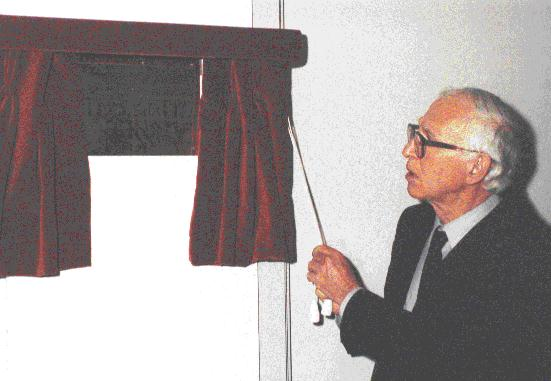

On 25th June 1997, the President of the Royal Society, Sir Aaron Klug, unveiled the memorial plaque on the wall in Birkbeck College, University of London, just outside the new Rosalind Franklin Laboratory. He had just entertained us with a lecture 'Rosalind Franklin and the Double Helix', (reported below). He paused before the unveiling to reminisce that in weather like this (it had been raining heavily all that day in London) in the older area of laboratory where they worked in the 1950s they sometimes worked under an umbrella beneath leaky skylights. Happily, the new laboratory roof did not leak. Dr Neil McDonald can be seen in the cover picture showing Sir Aaron some of the equipment in the 'Rosalind Franklin Laboratory' . I am grateful to the Crystallography Department, Birkbeck College for copies of their photographs and permission to reproduce them here.
To read about the current research done in the laboratory click here.
Sir Aaron Klug worked at Birkbeck between 1954 and 1962 with Rosalind Franklin until her untimely death from cancer in 1958. He felt that the BBC TV program about her life did not represent her character as he saw it, although it did manage to convey some of the excitement of scientific research. She was not only a superb experimentalist but she had the mental power to analyse the photographs. She was a single minded, determined woman, but she also had a sense of fun and was not nun-like or austere. Her student, R.G.Gosling, felt that James Watson's portrayal of her in his book 'The Double Helix' was inaccurate. However, Gosling remarked she did not suffer fools gladly.She was born in 1920, the second child and first daughter in a family of 5 children of Ellis and Muriel Franklin who came from a family of merchant bankers. They believed that girls were educated to get married and do charitable social work in adult life, which caused disagreements later between Rosalind and her father.Her great uncle was Herbert Samuel and her mother's cousin the Chinese scholar Arthur Waley. As a child Rosalind enjoyed making things in the family workshop and despised dolls as playthings. She was educated at St.Paul's School, London and at Newnham College, Cambridge, where she graduated in 1941 and gained a research scholarship to work on gas phase chromatography with R.W.Norrish. However, this was during the Second World War, and she decided she should work on something more relevant to the War Effort, so in 1942 she moved to the British Coal Utilization Research Association, (CURA) where she worked on the microstructure of coke, and submitted her Ph.D Thesis.
In 1946 she moved to Paris, where she worked with Jaques Mering, learning the techniques of X-ray diffraction to investigate the changes which occur in carbon fibres when they change into graphite on heating. In 1950 John Randall invited her to set up a laboratory at King's College, London, to study DNA fibres using this new technique. In those days people thought that proteins carried the hereditary material, DNA was only known to be a part of the cell nucleus. Rosalind had been happy in Paris, but in King's College she found it difficult, partly because John Randall was on holiday when she arrived, and he had failed to explain her status to Maurice Wilkins who was already working on DNA. She thought she was to set up the X-ray laboratory as his equal, but he thought she was his junior. As a physical chemist, Rosalind realised the importance of controlling the humidity while taking the X-ray photographs, so she was able to make thinner fibres which produce more precise X-ray patterns which were easier to interpret. She discovered that there are two forms of DNA, the A and B, and decided to work on the A form because there were visible X-ray spots for about 10 bases, but the A form does not show the helical structure as well as the B form, and initially she thought of it as a ladder with bonds between the bases as the rungs. However, her notebooks show that on 24 February she was thinking of a three dimensional helical structure. So she was very close to discovering it. In March she moved to Birkbeck and wrote up her paper on the old Departmental typewriter dating it 17 March 1953, one day before the date of the 'Watson and Crick' paper. Later at Birkbeck she worked on the structure of the tobacco mosaic virus(TMV) and improved her experimental techniques. In four short years she discovered the structure of TMV, a hollow cylinder with protein units on the outside, and laid the foundations of molecular biology.
She died in 1958; four years later Crick, Watson and Wilkins were awarded the Nobel Prize in Physiology and Medicine for the discovery of the structure of DNA.
Kate Crennell
To read about the current research done in the laboratory click here.
Webmaster's Notes:
1. Further details about Rosalind Franklin's work can be found on the World
Wide Web:
3. There have been many books written about the discovery of the double helix here are a few.
The Department of Crystallography at Birkbeck College has recently relocated its laboratory for recombinant DNA technology to a new site with expanded facilities close to the X-ray and Raynor-Wolfson Biochemistry laboratories. The new laboratory is to be named after the distinguished scientist Dr. Rosalind Franklin who worked in the Department between l953-1958.
The laboratory supports the majority of genetic manipulations using bacterial hosts for plasmids and phage. There are also tissue culture facilities for expression of proteins using insect and mammalian cells. Yeast and fungal expression is carried out elsewhere in the Department. These facilities have allowed us to clone several natural and synthetic genes, undertake DNA sequencing, synthesize oligonucleotides, perform site-directed mutagenesis and produce milligram amounts of protein using expressions vectors in different micro-organisms. A number of these proteins have been purified to homogeneity and crystallized. Genetic techniques also allow biosynthetic labelling of recombinant material to provide experimental phases. For example by producing protein using methionine auxotrophic strains of bacteria, selenium can be incorporated into the macromolecule.
Research within the laboratory is focused on understanding the structure and
function of a variety of biologically important molecules. In particular
several groups are actively examining components of signalling pathways used
by eukaryotic cells to initiate biological responses such as proliferation,
vasoconstriction and an immune response.
The three main areas of interest are:
1. Cell Surface Receptor Interactions
The initial event that triggers a signalling cascade is the interaction
between an extracellular polypeptide ligand such as a growth factor with its
cell surface receptor(s).
An atomic description of the binding interface
between a ligand and its receptor is of prime importance for the design of
highly potent and selective receptor antagonists and superagonists. Current
receptor systems under study include neurotrophic factor receptors. (Neil
McDonald), hormone receptors such as the endothelin receptor (Bonnie
Wallace) and MHC class II molecules that serve to bind antigenic peptides
and present them to T-cells (Paul Travers).
2. Intracellular Signalling
Following receptor engagement by ligand, highly selective protein kinase functions are activated either by association with the receptor or, in the case of receptor tyrosine kinases which possess an intrinsic kinase activity, by auto-phosphorylation. Since protein kinases control to a large extent the propagation of external signals through to the cell nucleus they are therefore highly regulated. The structural basis for the regulation of specific protein kinases is an active research area (Neil McDonald). One consequence of activation of receptor tyrosine protein kinases is the stimulation of GTP-hydrolysis by several key enzymes including p21ras. A homologous family of GTPase molecules are activated in response to many other diverse external stimuli including hormones and are under investigation in the laboratory. (Ben Bax).
3. Subversion of Eukaryotic Cells by Viral Factors
Virus particles use a variety of methods to enter and proliferate within infected cells. Viral factors are used to subvert cellular machinery leading to the disruption of normal cell functioning, viral replication and virion formation. Studying the structures of viral counterparts of essential eukaryotic genes will further our understanding of the molecular mechanisms used by viruses and may aid in establishing strategies for the design of novel inhibitors against viral infection (Renos Savva).
Neil McDonald
Birkbeck College
 Click here to return to BCA homepage
Click here to return to BCA homepage